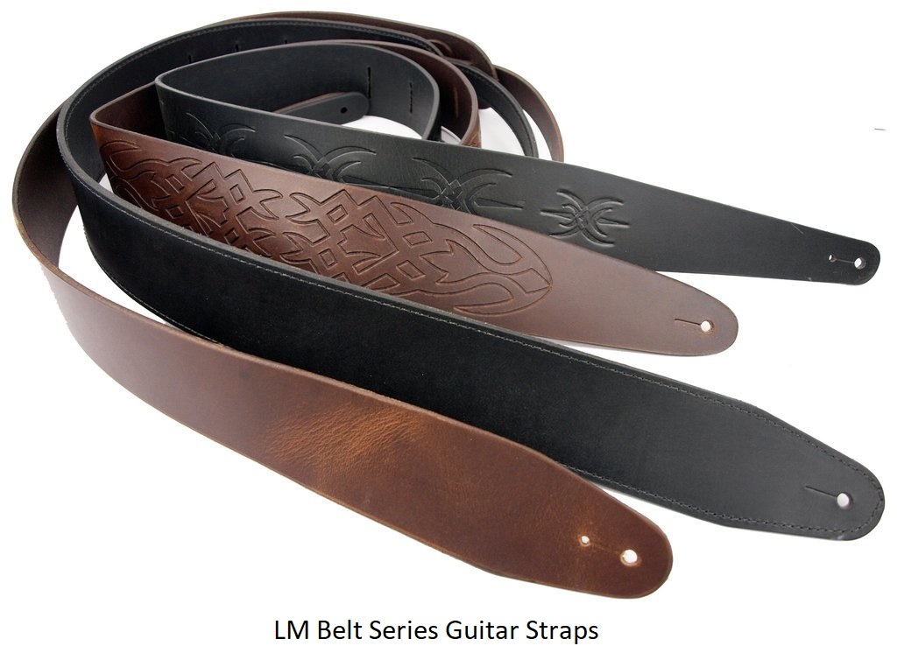
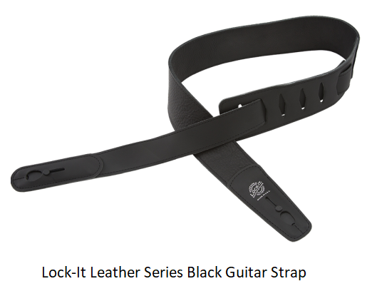

There are many different kinds of guitar straps that you can choose from; it all depends on your comfort level when wearing it. You can choose from a strap that is nylon, or as fancy as a leather strap. There are even guitar straps with cool designs on them including stripes, fames, camouflage, or you can keep with a solid color. There are many different brands that manufacture guitar straps. Some of the brands include Perri's, LM Products, and Lock-It. Typically, companies that sell guitars also manufacture straps like Gibsom, Fender, Planet Waves, and Martin.
The Perri's guitar strap was developed by Lou Perri of the Perri's Leathers Ltd. The straps make it so the guitar player can express themselves with multiple designs to choose from. The company started to create the straps in the late 1980's. Before they starting selling them, the company perfected their craft of strap making for over fifteen years. The straps are known to be very comfortable and they have hundreds of frequent customers and thousands of musicians that swear by these straps.

LM Products is a third-generation, family owned company that makes leather straps for multiple musical instruments such as, the guitar, electric bass, banjo, mandolin, brass instruments, percussion, and many more. They have been one of the largest instrument strap manufacturers in the world after being in business for the last forty years.
The Lock-It guitar straps are known to be the next level of guitar strap because of it's locking feature, so they don't loosen from the guitar when it is being played. These types of guitar straps are known to have snap-action locks on them, and have genuine leather ends to connect to guitar. Also, they are super tough to hold up a heavier guitar. Some of the materials that the straps are available in include polypro, cotton, leather, and more.
